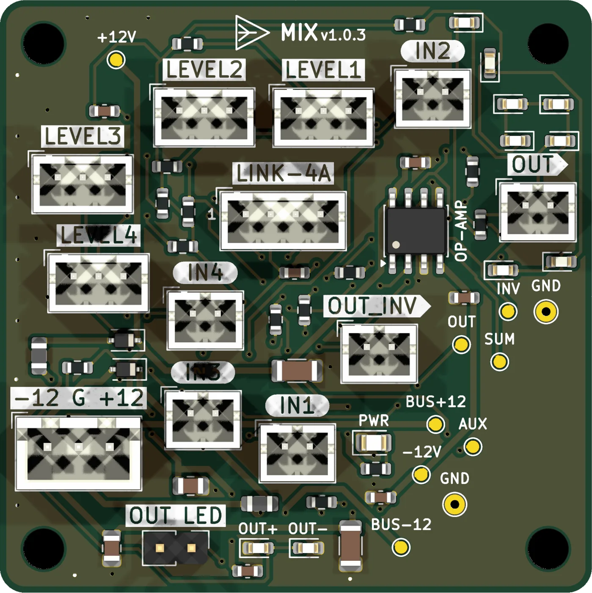
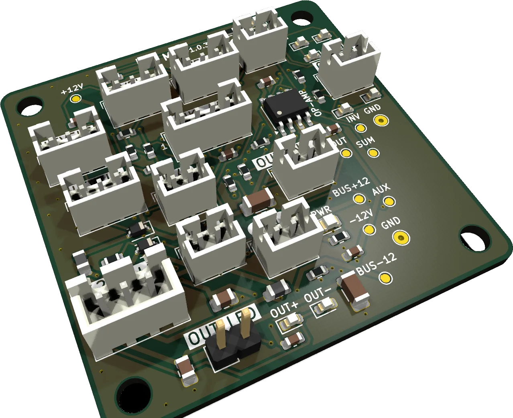
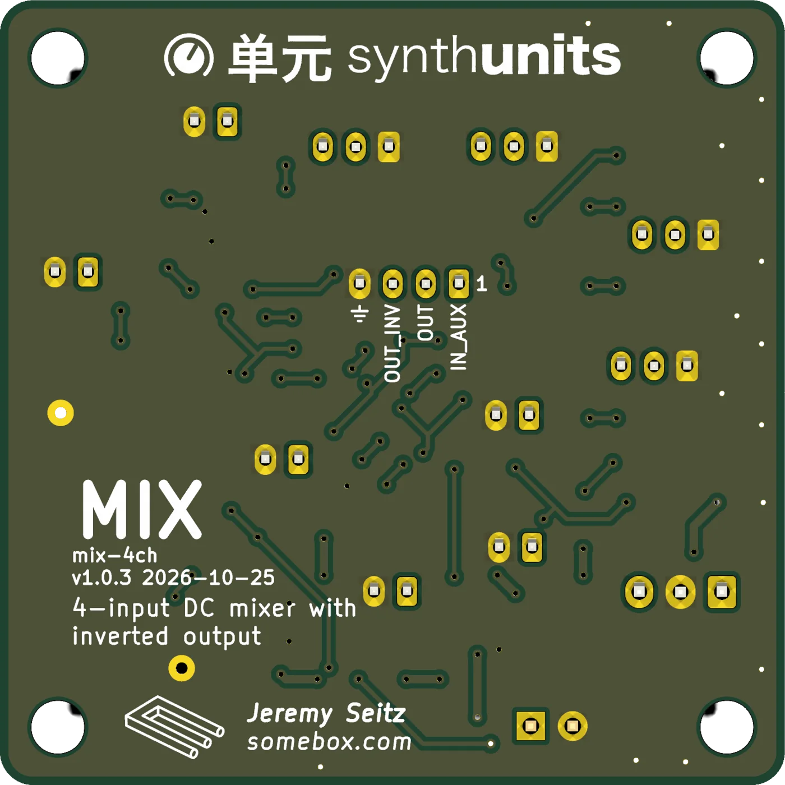
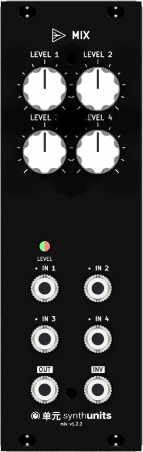

4-input DC mixer
A four-input DC mixer for audio and CV, with an inverted output and an LED soft limiter.
A four-input DC-coupled mixer on a 47.5 × 47.5 mm board. Each input jack feeds the top of its LEVEL pot; the wiper goes through 100 kΩ into an inverting summer, and a second inverting stage puts the polarity back, both on one dual op-amp. Full level is unity, so it mixes CVs as well as audio, and both the mix and its inverse come out.
Across the summer's feedback sit two strings of red LEDs as a soft limiter. They start to conduct near 6 V, so four loud inputs round off instead of clipping hard at the op-amp's rails into whatever comes next (on the voice, the filter).
In a patch: oscillators and noise into a filter, CVs added together or offset, or OUT INV to subtract one signal from another.
- Status
- Being made
- Version
- v1.0.3 (2026-10-25)
- Board
- 47.5 × 47.5 mm, 2 layers
- First order
- 5 boards, 5 assembled by the fab
- Rough price
- about $30–35 (how)
- Progress
- follow its tracking issue




Block diagram
Drawn by the site's generator from the board's own data: its blocks, its connectors and the links between them. The pots and switches are listed in the block they set.
What it does
- Inputs: 4, DC-coupled, each through an Alpha 9 mm B100K LEVEL pot; unity at full.
- Outputs: OUT and OUT INV, through 1 kΩ.
- Limiter, simulated: ±5 V in gives ±5.0 V out at 0.05 % THD; it starts to round off past ±6 V; ±10 V in gives ±6.8 V. Four ±5 V saws at full level peak at about +7.5 / −7.9 V.
- Taper: the 100 kΩ summing resistor loads the pot, so half rotation gives about a third of the level. A100K pots suit a mixer used mostly for audio.
- Bandwidth: rolls off above about 72 kHz.
- Power: about 3 mA on each rail, estimated.
- Board: 47.5 × 47.5 mm, 2 layers, four M3 holes.
Connections
| Connector | Wire to | Housing | Pins |
|---|---|---|---|
| IN1 | a jack (Thonkiconn) | JST PH, 2 pins, top entry | 1 tip, 2 GND |
| IN2 | a jack (Thonkiconn) | JST PH, 2 pins, top entry | 1 tip, 2 GND |
| IN3 | a jack (Thonkiconn) | JST PH, 2 pins, top entry | 1 tip, 2 GND |
| IN4 | a jack (Thonkiconn) | JST PH, 2 pins, top entry | 1 tip, 2 GND |
| OUT | a jack (Thonkiconn) | JST PH, 2 pins, top entry | 1 tip, 2 GND |
| OUT_INV | a jack (Thonkiconn) | JST PH, 2 pins, top entry | 1 tip, 2 GND |
| LEVEL1 (B100K) | a pot (Alpha 9 mm B100K) | JST PH, 3 pins, top entry | 1 CCW, 2 wiper, 3 CW |
| LEVEL2 (B100K) | a pot (Alpha 9 mm B100K) | JST PH, 3 pins, top entry | 1 CCW, 2 wiper, 3 CW |
| LEVEL3 (B100K) | a pot (Alpha 9 mm B100K) | JST PH, 3 pins, top entry | 1 CCW, 2 wiper, 3 CW |
| LEVEL4 (B100K) | a pot (Alpha 9 mm B100K) | JST PH, 3 pins, top entry | 1 CCW, 2 wiper, 3 CW |
| POWER (1 -12V, 2 GND, 3 +12V) | a the power board output (straight-through JST XH lead) | JST XH, 3 pins, top entry | 1 −12 V, 2 GND, 3 +12 V |
| LINK-4A | a lead to another module, or open | JST PH, 4 pins, top entry | 1 IN_AUX, 2 OUT_MIX, 3 OUT_INV, 4 GND |
Every panel control has its own connector with a fixed pinout, so any lead of the right size fits any module. Pin 1 is the square pad.
LEDs
On the board: OUT+ (yellow), OUT- (red), PWR (green). Pads for a panel LED: OUT LED.
Wiring and setup
- Power: a 3-pin JST XH lead (1 −12 V, 2 GND, 3 +12 V) from one of the power hub's outputs, with a ferrite and a series Schottky on each rail. Check each lead with a meter first.
- Panel: 6 jacks (IN1 to IN4, OUT, OUT INV) and 4 Alpha 9 mm B100K pots (LEVEL1 to LEVEL4), each on its own top-entry JST PH connector: jacks 2-pin (1 tip, 2 GND), pots 3-pin (1 CCW, 2 wiper, 3 CW).
- OUT LED pads: the mix's level in both polarities, through its own resistor. Wire a two-lead bicolour LED, or two LEDs back to back; a single LED would take the negative half in reverse.
- LINK-4A: 1 AUX in (a fifth input at unity), 2 OUT, 3 OUT INV (before their 1 kΩ), 4 GND.
- Front panel: the series' shared 8 HP layout, with the board sideways behind it on a printed sled.
- No trimmers: nothing to calibrate.
Limits and open questions
- Not built. The limiter's knee depends on the red LEDs' forward voltage at tiny currents, which their datasheet doesn't give. Four of the five LED models I tried agree on a knee of 5.5 to 6 V; check it on the bench. If the LEDs turn out soft, one resistor moves the knee.
- With a panel LED fitted, OUT can flat-top at the very extremes (four saws at full, or inputs past ±10 V) before the limiter rounds it.
- The limiter LEDs' capacitance adds a little distortion at high frequencies, about 0.1 to 0.3 % at 10 kHz.
- One limiter LED fitted the wrong way round makes the limiter one-sided.
Development notes
- The textbook inverting summer, as in tkilla64's umix (MIT) and Doepfer's A-138. The LED limiter is mine: none of the sources I'd collected draw one, and Electric Druid's preference for soft drive supports the idea.
- The inverted output came with the voice, where it feeds VCA 2 so the dry mix adds in phase under the filtered voice.
- Before ordering, the OUT LED pads' resistor went from 2.2k to 4.7k, so a bicolour panel LED can't flat-top the output.
- Next: build it, then check unity and polarity per input, the limiter's curve and its distortion.
Schematic
The schematic as drawn, with each chip named by its function rather than its part number. The design isn't open source yet, so there are no files to download.


Would you use a MIX? A thumbs-up on its tracking issue is how I count interest, and you can subscribe there to follow its bring-up. Questions and ideas go to the discussions.